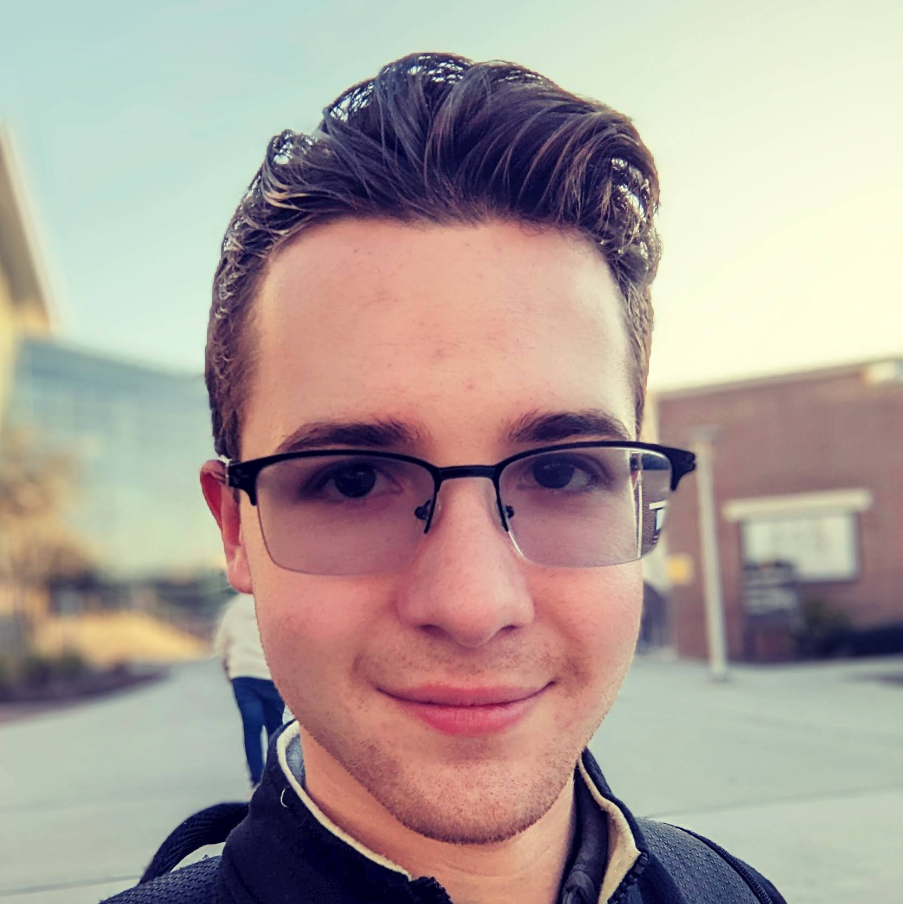

Computational Mathematics Student at University of Central Florida

Lover of
A mathematics student by day, and a developer by night, I am always eager to improve my skillset and learn something new. With a strong passion for my work and a fiery drive for greatness, I'm excited for what the future holds.